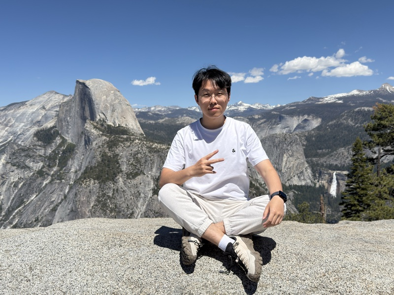

Ph.D. Candidate, GSAI at Renmin University of China
jingdong98@ruc.edu.cn
Hi there! I am a third-year Ph.D. candidate at GSAI, Renmin University of China, advised by Prof. Zhiwu Lu. Currently, I am working closely with Prof. Mingyu Ding at UNC. Earlier, I received my Bachelor's and Master's degrees from Beijing Jiaotong University, where I was advised by Prof. Shuo Zhang. I feel truly fortunate and honored to have worked with all three of my advisors.
I'm focusing on Embodied AI. My goal is to build brains for robots, so that they can act in the physical world with human-level intelligence. Humanity is standing at a singular moment in history. Productivity is being reshaped at an unprecedented pace. Claude and GPT, today's leading LLMs, have already achieved astonishing intelligence inside the screen. However, the physical world still remains beyond their reach. Beyond doubt, such super-brains will need capable bodies. They should grow toward human and even superhuman levels, not only mentally but also physically.
Unfortunately, today's Vision-Language-Action (VLA) models lag far behind LLMs. Pessimistically speaking, they are still far from the GPT-3 moment of Embodied AI. A key reason is that action is a modality fundamentally different from language. In my view, the action modality has not yet shown enough potential for emergent capabilities through scaling. How to properly understand and model action is an often-overlooked yet central question in Embodied AI. I will devote myself to this topic in the coming years.
I expect to graduate in June 2027 and actively exploring opportunities in industry. Feel free to reach out!
(# denotes equal contribution. Full list on Google Scholar.)
TempoVLA: Learning Speed-Controllable Vision-Language-Action Policies
Learning Action Priors for Cross-embodiment Robot Manipulation
Reviewer of ICML, NeurIPS, CVPR, ICCV, ECCV, AAAI, ACM MM, CoRL, ToIS, TMLR, IROS